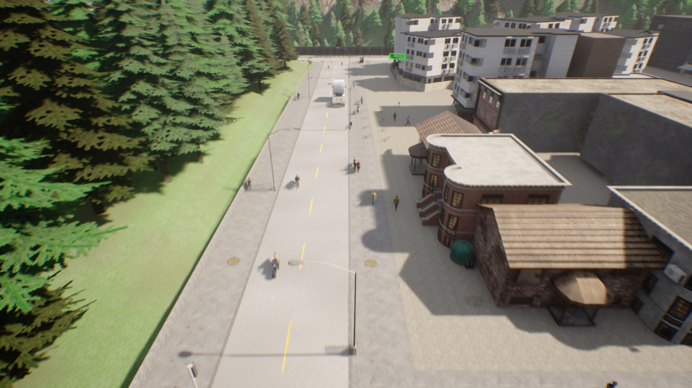
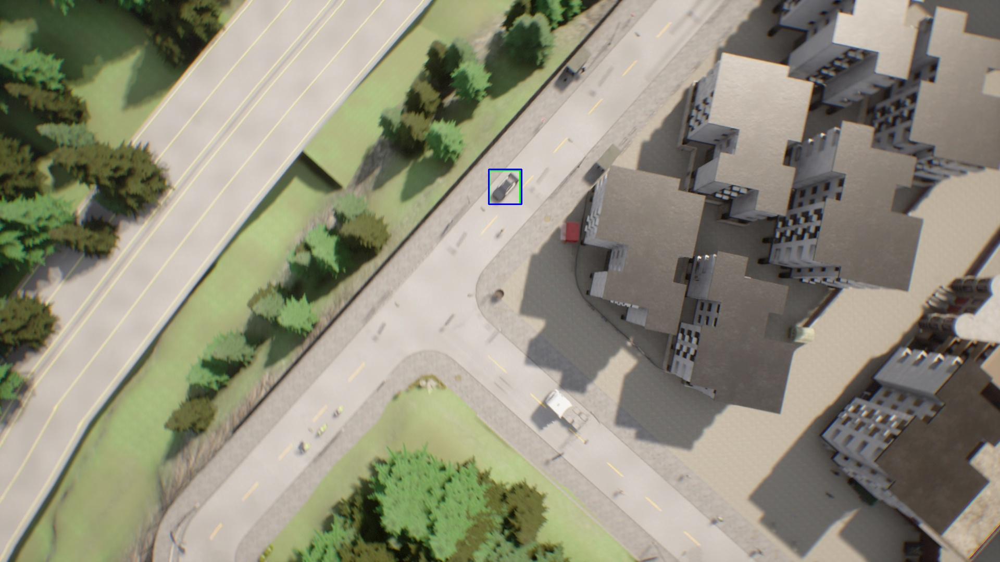
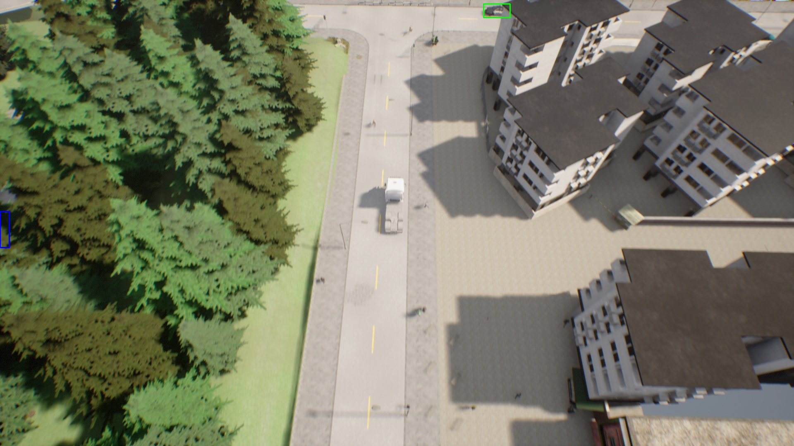
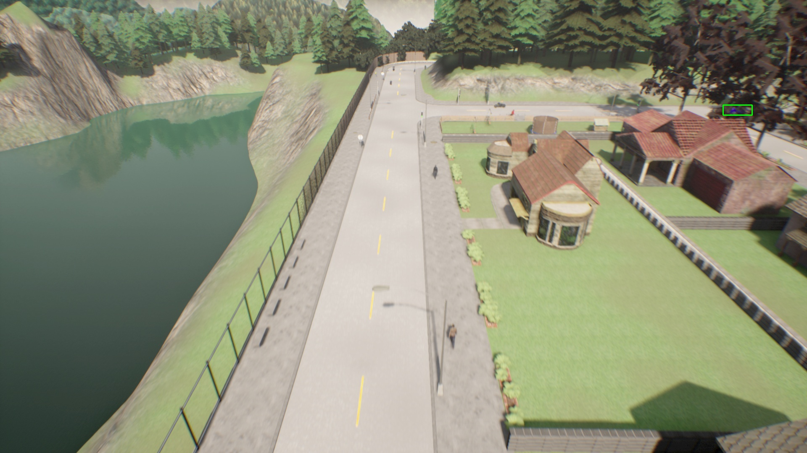

Computer Vision • Object Detection • Aerial Data
Car Detection using YOLO on drone-style aerial imagery
This project builds a vehicle detection pipeline for overhead urban scenes. It prepares aerial RGB data captured at multiple heights, converts vehicle labels into 2D bounding boxes, trains a YOLO11 model, and visualizes predicted car detections on unseen frames.

Detected vehicles highlighted with YOLO bounding boxes
Problem Statement
Detect small vehicles from challenging overhead views
Aerial car detection is harder than regular dashcam detection because the same object appears at different scales depending on altitude. Vehicles can be tiny, partially hidden by trees or shadows, and viewed from steep angles. The goal is to train a detector that can identify cars across simulated urban scenes and produce bounding boxes suitable for monitoring traffic, road usage, and autonomous aerial perception.
Solution Pipeline
From raw aerial frames to predicted detections
Prepare dataset
Images from 20m, 50m, and 80m folders are combined into a unified dataset while preserving altitude information in the filenames.
Convert labels
The data loader converts 3D vehicle annotations into 2D bounding boxes that YOLO can learn from.
Train YOLO
The training script uses the dataset YAML and YOLO11-L weights to fine-tune the detector for aerial car detection.
Evaluate + visualize
Evaluation and prediction scripts generate output images with bounding boxes so performance can be inspected qualitatively.
Detection Results
Best sample visualizations
These selected outputs show detections across different camera heights, road layouts, shadows, and vehicle scales.



Repository Structure
Key files and what they do
ml_project_part1.pyCreates the data loader and converts 3D bounding boxes to 2D boxes.
data_handle.pyCombines 20m, 50m, and 80m data and performs the train/validation split.
part1_train.pyTrains the YOLO model on the prepared aerial dataset.
part1_eval.pyEvaluates the trained detector.
images10_predict.pyRuns prediction on randomly selected images and saves output visualizations.
visualise.pyDisplays a single image from the dataset for quick verification.